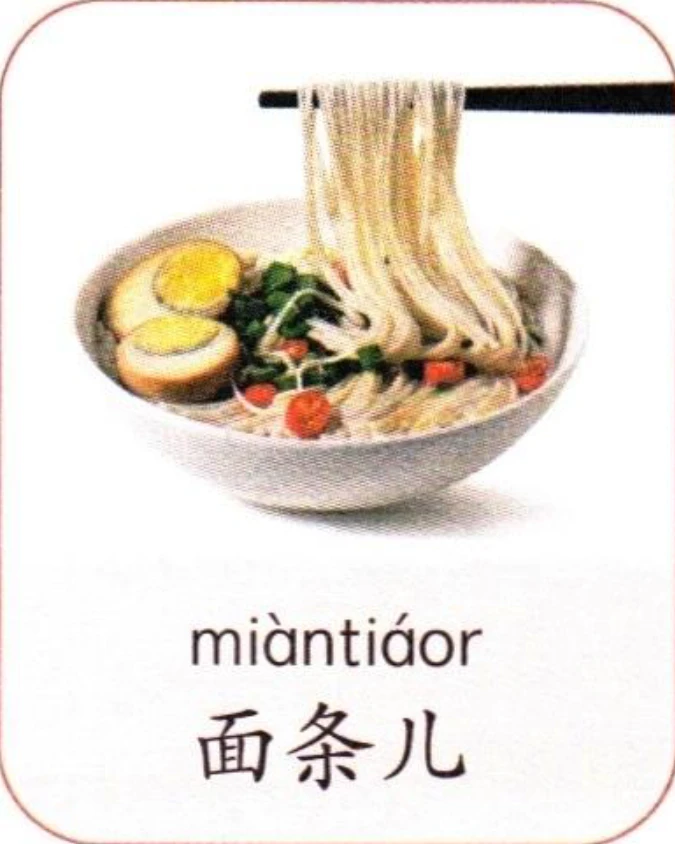
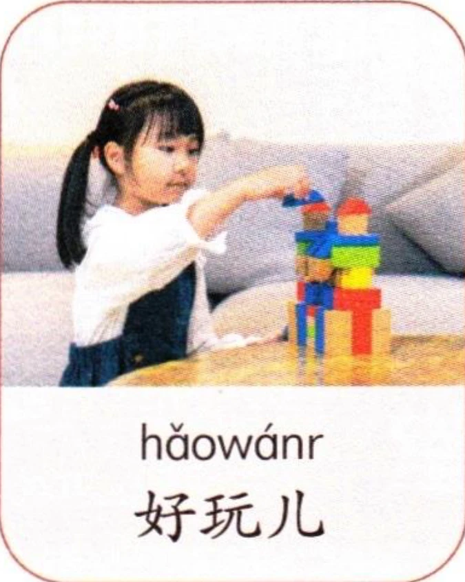
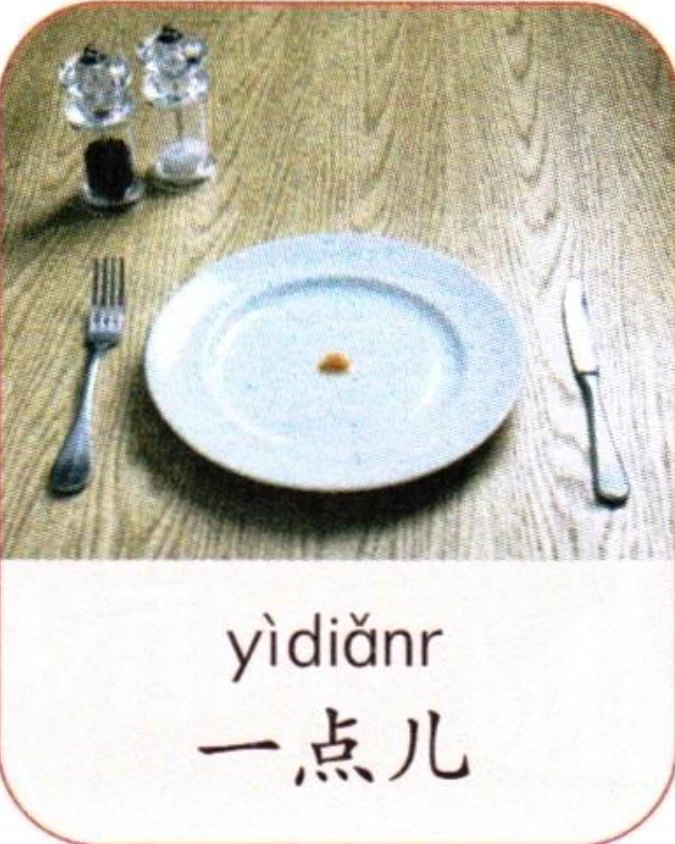
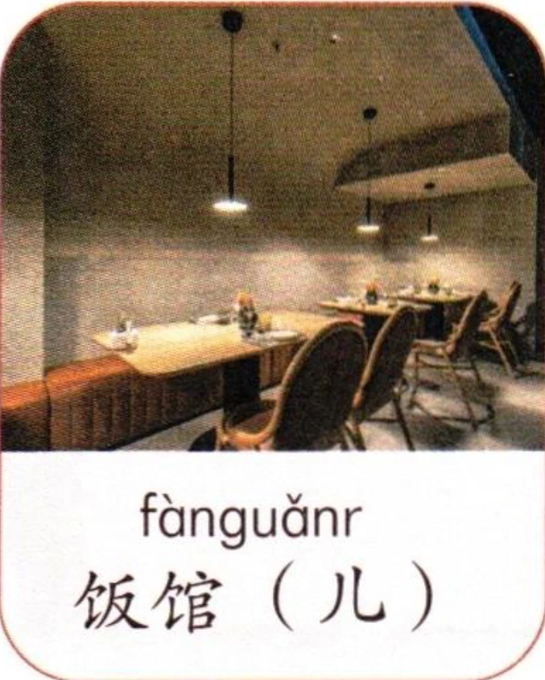
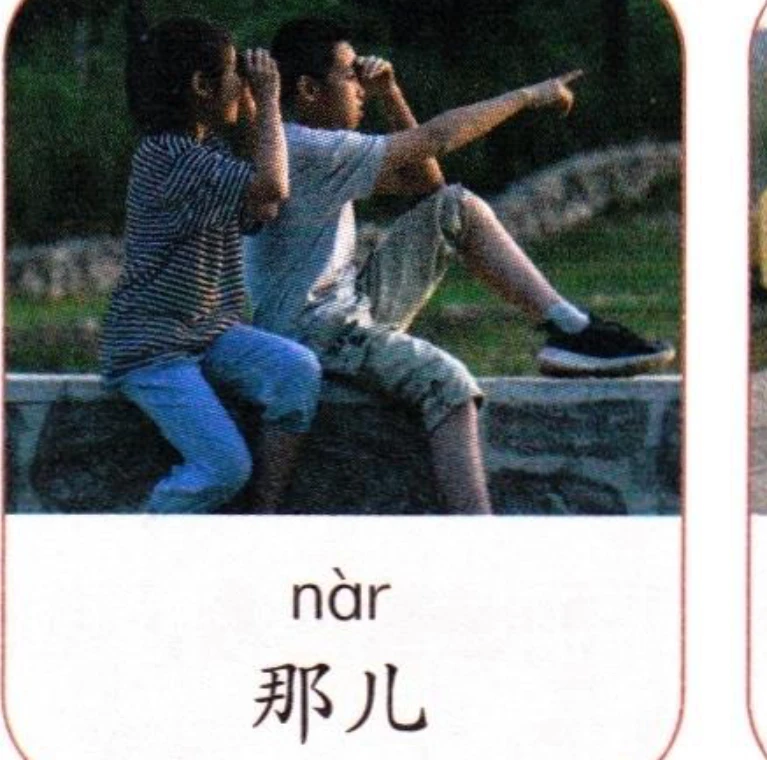
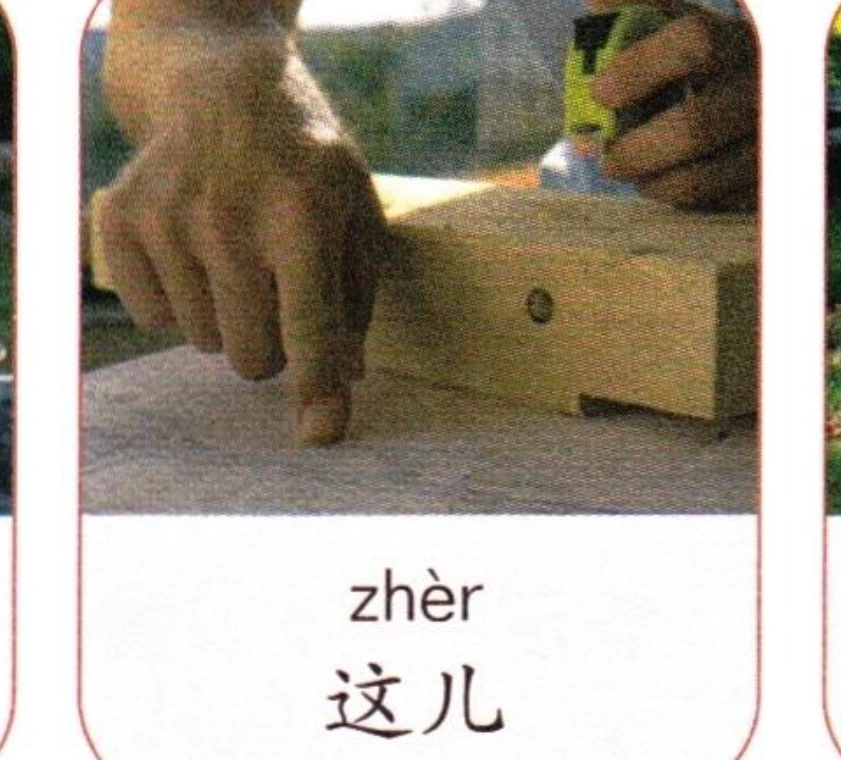
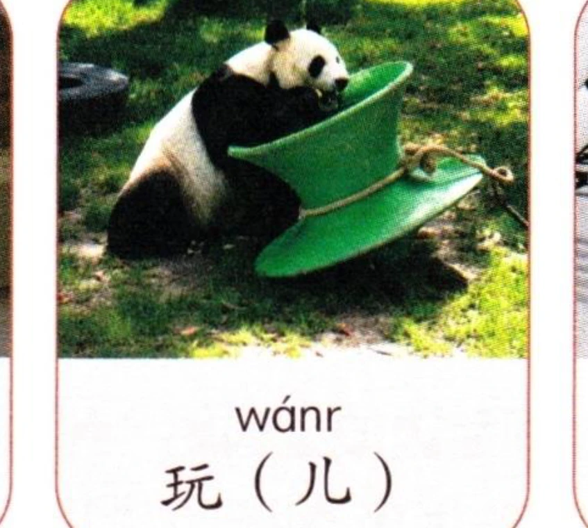
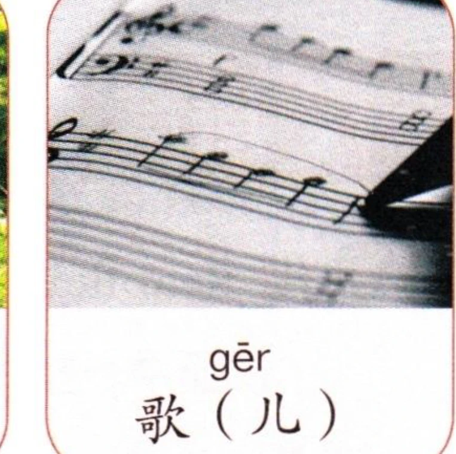

看图片，先跟读，再大声朗读。注意儿化发音。Look at the pictures, listen and repeat, then read aloud. Note the pronunciations with “儿 (ér)”.Посмотрите на картинки, послушайте и повторите, затем прочитайте вслух. Обратите внимание на произношение с “儿 (ér)”.








2拼写规则——隔音符号 “a、o、e”开头的音节与前面的音节相接时，为了避免音节界限不清楚，要在两个音节间使用隔音符号(')进行区分。例如：“shí'èr （十二）、Xī'ān（西安）、Tiān'ān Mén（天安门）”。Spelling Rule—The Syllable-Dividing Mark When a syllable beginning with “a”, “o”, or “e” follows another syllable, the syllable-dividing mark (') should be used between the two syllables to avoid ambiguity. For example: “shí'èr (十二)”, “Xī'ān (西安)”, and “Tiān'ān Mén (天安门)”.Правило написания — Разделительный знак слога Когда слог, начинающийся с “a”, “o” или “e”, следует за другим слогом, между двумя слогами следует использовать разделительный знак слога ('), чтобы избежать двусмысленности. Например: “shí'èr (十二)”, “Xī'ān (西安)” и “Tiān'ān Mén (天安门)”.
1听录音，选择听到的双音节并大声朗读。Listen, choose the disyllables you hear, then read aloud.Послушайте, выберите двусложные слова, которые вы слышите, затем прочитайте вслух.
(1) nà piān nàbiān (2) dōngxi dōngxī (3) chàoshì cháoshī (4) wănfàn wănfēng (5) shǒují shǒujī (6) diànhuà biànhuà
2听录音，分辨儿化与非儿化发音的不同，再跟读、朗读。Listen, distinguish between the retroflex and non-retroflex pronunciations, then repeat and read aloud.Послушайте, различите ретрофлексное и неретрофлексное произношение, затем повторите и прочитайте вслух.
(1) nà nàr (2) cí cír (3) huàr huà (4) yíkuàir yí kuài (5) jiāyóu jiāyóur (6) chàng gèr chàng gē
032